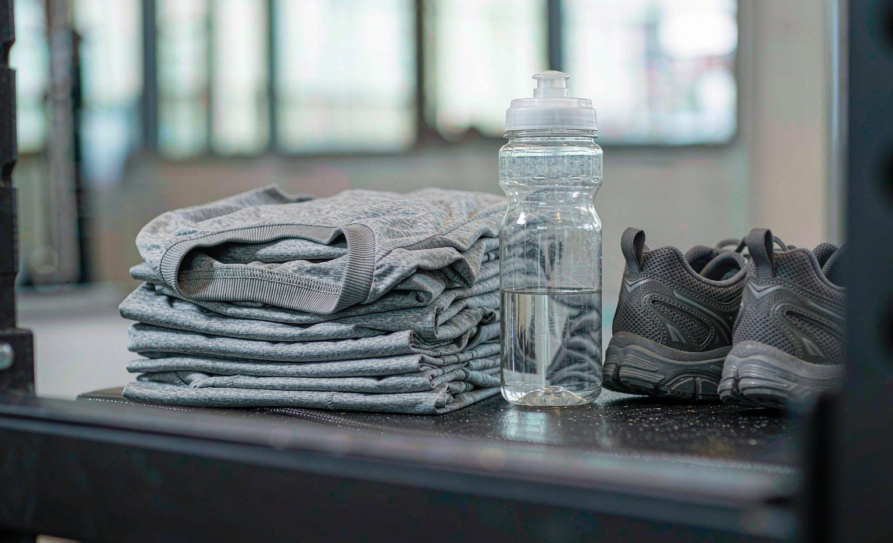

I Ordered 12 Custom T-Shirts for My Running Team: What Went Right and Wrong
Short answer: my 12-shirt order for the Tuesday running group cost $251.88 ($19.99 per tee plus $11.99 shipping), arrived in 9 days, and looked great, with one lesson learned the hard way about ordering athletic sizes.
Bottom line: order one size up from street sizing for athletic cuts and collect sizes by form, because two of my twelve shirts were too small and a $19.99 reprint beats a $23.98 exchange.

Our Tuesday running group finally earned matching shirts. I collected sizes, picked a heather gray crewneck at $19.99 with a one-color chest print, and placed a 12-shirt order totaling $239.88 plus $11.99 shipping. Here is the full log, including the sizing surprise nobody warned me about.
The Size Collection: Forms Beat Group Chats
I collected sizes with a simple form instead of chasing replies in the group chat, and the data came back clean: two S, three M, four L, two XL, one 2XL. The form also asked for a fit preference, which is how I learned that half the group wanted a relaxed fit. That answer shaped the shirt choice more than any design decision.
The Sizing Surprise
Two shirts ran small. Not fashion-small, but noticeably shorter in the body than the size chart suggested, and both were in the athletic-cut batch. The print team confirmed later that heather blends in athletic cuts measure about half a size trim. We swapped with a reprint at $19.99 per shirt plus a shared shipping fee, which the supplier handled without drama because I had ordered through the site rather than a marketplace.
The Print After Three Weeks of Runs
One-color chest print on a heather blend has now survived three weeks of sweat, sunscreen, and washing cold inside out. The print shows no cracking and minimal softening, which matches what you would expect from DTG on a cotton-blend tee. The two white shirts in the order show sweat marks more than the gray ones, a small regret in color choice.
The Order at a Glance
| Item | Detail | Cost |
|---|---|---|
| Crewneck tees | 12 x $19.99, one-color print | $239.88 |
| Shipping | 12-shirt order | $11.99 |
| Reprints (sizing) | 2 tees | $39.98 |
| Delivery time | Order to doorstep | 9 days |
| Size curve | 2S 3M 4L 2XL 1 2XL | Form-collected |
Reordering and Adding Members Later
A running group never stays at twelve. People join, and by the next season you are ordering eight more shirts, which is easier if you saved the artwork and the garment details from the first order. A reorder placed with the same specification avoids the subtle drift in color that happens when a design is rebuilt from scratch.
Ask about the minimum before you reorder. Small reorders are usually printed with the method that has no setup cost, which means the print on the second batch can look slightly different from the first if the original was screen printed. If consistency matters more than price, order the new shirts at a similar batch size to the original.
Keep a record of who received which size. The next reorder is faster when you already know that three members wear a large and one wants a relaxed fit, and it prevents the guessing that produced my two undersized shirts.
Six Ways to Make a Team Shirt Fit
Fit problems on team apparel come from a handful of predictable causes. The six below address the ones that showed up in my order and in the conversations that followed it.
The chest box deserves a note. A print that runs low on the shirt crosses the fold where the fabric bends at the waist, and that is where graphics distort first. Keeping the design inside a ten-inch box above that fold keeps the artwork flat and readable no matter who is wearing it.
Color choice is the other quiet variable. White shirts show sweat, sunscreen, and deodorant marks more than any other color, and they also make a light print harder to read. Heather gray and navy hide wear and carry both dark and light ink well, which is why most running clubs end up there.
- Measure one shirt the runner already likes, from armpit to armpit
- Ask for a fit preference rather than a size alone
- Order the athletic cut one size up from street sizing
- Keep the design inside a ten-inch chest box so it sits above the fold
- Avoid a full front print on a performance fabric, which stiffens the chest
- Choose heather gray or navy over white for sweat and sunscreen
What a Team Order Costs at Scale
My twelve crewneck tees cost $239.88 at $19.99 each plus $11.99 shipping, with two reprints adding $39.98. The reprints are the part buyers forget, and they are the reason a ten percent buffer belongs in every group budget.
Larger orders change the per-shirt economics mostly through print method rather than through fabric. One-color designs at higher quantities are typically screen printed, while small orders use DTG, and the two methods carry very different setup structures. Ask for both quotes at your actual quantity rather than assuming the larger order is automatically cheaper per shirt.
Shipping deserves its own line. A twelve-shirt order shipped for $11.99, and the cost per shirt falls as the order grows, so a second small order placed later is more expensive per shirt than adding a few spares now.
Our t-shirt design guide covers the artwork decisions that make a one-color print read at a distance, which is the practical constraint on any running shirt.
After the Race: Care for the Whole Batch
Team shirts get washed together, which is the worst possible routine for prints. Turn every shirt inside out before they go in, keep the cycle cold, and skip the bleach. The one-color print on my shirts has now survived three weeks of runs with no cracking, and the cold inside-out habit is most of the reason. Our print comparison after 20 washes shows what happens when that routine is skipped.
Avoid drying if you have the space. Air drying removes the single largest source of print aging, and a rack of twelve shirts dries overnight in a warm room. If you must tumble, use low heat and pull the shirts out slightly damp so they finish flat.
Wash the white shirt in a batch separately if the group has only one. White cotton picks up dye transfer from navy or gray garments in a mixed load, which is how a coordinated set develops one odd shirt that nobody wants to wear.
Distributing Shirts to a Group
Handing out twelve shirts takes planning. I labeled each one with a name after unpacking and sorted them into piles by size, which reduced the swap conversation at the track to a few seconds. With an uneven size curve, as mine was, presorting is the difference between a quick handover and a twenty-minute shuffle.
Plan a swap window rather than treating sizes as final. Two members traded shirts a week later, and agreeing in advance that trades were allowed kept that from becoming a complaint about my sizing.
If the shirts are for an event, hand them out at least two weeks before. That leaves time for a reprint, and it also gives everyone a chance to wash the shirt once before wearing it for a timed run.
Frequently Asked Questions
How much do custom t-shirts cost for a group order?
Standard crewnecks run $19.99 each with one-color prints, so a 12-shirt order costs $239.88 plus shipping. Two-color prints and premium fabrics add a few dollars per shirt.
Do custom athletic t-shirts run true to size?
Athletic cuts in heather blends ran about half a size trim in my order. Check the fit preference of your group, and consider ordering one size up for the athletic batch.
How long does a 12-shirt custom order take?
Mine took 9 days from order to delivery, inside the 7 to 10 business day window. Order at least three weeks before race day if you want reprint slack.